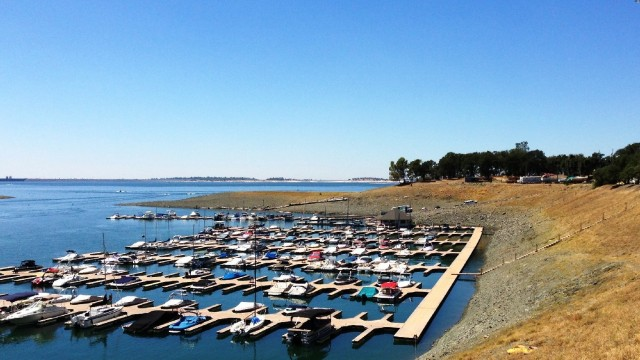

Trout Drought
by: James Ernest
The abnormally early heat wave continues to set record temperatures across much of the country, including locally. Reservoirs across the west are at their lowest levels in decades, and water shortages are already plaguing agriculture, leading to losses of crops.
However, there is sure to be a bumper crop of wildfires this year.
Speaking as a trout, the water is way too hot, way too sooty, and way too low for comfort. Stream flow is already at late summer levels, meaning that by late summer it will be much worse. That giant sucking sound of water being pulled out of our streams to fight wildfires really gives me the willies. This fish is signing up with a school that’s heading north – I hear ice is no longer a problem up there.